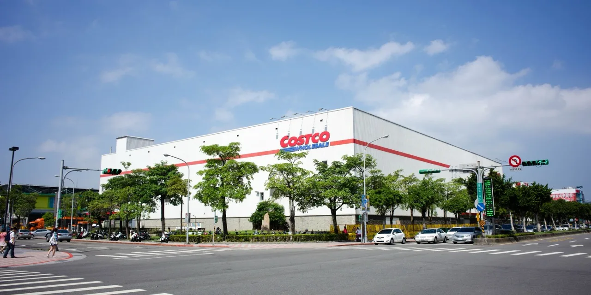

코스트코 홀세일을 보는 투자자들이 가장 궁금해할 질문은 의외로 매장 수가 아닙니다. 창고형 매장이 더 많이 생기면 매출은 커질 수 있지만, 이 회사의 진짜 방어선은 회원이 매년 돈을 다시 내는지, 그리고 회비를 낸 회원이 더 자주·더 많이 사는지에 있습니다. 코스트코는 물건을 싸게 팔아서 사람을 모으고, 그 사람들이 회원권을 유지하면서 반복적으로 방문할 때 이익의 질이 좋아지는 회사입니다.
코스트코가 SEC에 제출한 FY2026 3분기 실적 자료를 보면, 2026년 5월 10일로 끝난 12주 동안 순매출은 691억 5,400만 달러였습니다. 전년 같은 기간의 619억 6,500만 달러보다 11.6% 늘었습니다. 같은 기간 회비 수입은 13억 7,300만 달러였고, 순이익은 21억 9,200만 달러, 희석 주당순이익은 4.93달러였습니다. 숫자만 보면 매우 강한 분기였지만, 코스트코 주주가 봐야 할 핵심은 그 매출이 얼마나 낮은 비용으로 반복되는가입니다.
코스트코는 2026년 5월 기준 전 세계 931개 창고형 매장을 운영합니다. 미국과 푸에르토리코 639개, 캐나다 115개, 멕시코 43개, 일본 37개, 한국 20개가 포함됩니다. 매장이 많은 회사처럼 보이지만, 투자 판단은 부동산 숫자보다 회원 경제성에서 시작해야 합니다. 신규 매장은 초기 비용과 자기잠식 부담이 있고, 해외 신규 시장은 갱신율이 안정되기까지 시간이 필요합니다. 그래서 코스트코의 성장성은 매장 증가 속도보다 회원 기반의 질에서 먼저 확인하는 편이 안전합니다.
회원권은 매출보다 먼저 읽어야 할 숫자입니다

코스트코의 회비 수입은 단순한 부가 매출이 아닙니다. 상품 판매는 마진을 낮게 가져가고, 회원비가 이익을 보완하는 구조에 가깝습니다. 회사의 2025년 연차보고서를 보면 2025년 말 총 유료 회원은 8,100만 명, 총 카드 보유자는 1억 4,520만 명이었습니다. 이그제큐티브 회원은 3,870만 명으로 전체 유료 회원 중 큰 비중을 차지했고, 이그제큐티브 회원의 매출 침투율은 전 세계 순매출의 약 73.6%였습니다.
이 숫자가 중요한 이유는 이그제큐티브 회원이 단순히 더 비싼 회원권을 산 사람이 아니라 더 자주 방문하고 더 큰 장바구니를 만드는 고객이라는 점입니다. 코스트코는 2% 리워드를 제공하지만, 그 리워드는 회원이 코스트코 안에서 다시 쓰도록 유도합니다. 회원이 많이 사고, 리워드를 받고, 다시 방문하는 흐름이 만들어지면 코스트코는 낮은 상품 마진으로도 높은 회전율을 유지할 수 있습니다.
2025년 10-K 기준 회원 갱신율은 미국·캐나다에서 92.3%, 전 세계에서 89.8%였습니다. 이 갱신율이 코스트코의 핵심 방어선입니다. 회원이 계속 돌아오면 회비 수입은 안정적으로 쌓이고, 매장 방문도 유지됩니다. 반대로 갱신율이 내려가면 회비 수입뿐 아니라 상품 판매량, 재고 회전, 공급업체와의 협상력까지 같이 흔들릴 수 있습니다. 코스트코 주가가 높은 밸류에이션을 받는 이유도 이 반복성이 쉽게 깨지지 않는다고 시장이 믿기 때문입니다.
창고형 매장은 싸게 파는 곳이 아니라 회전율을 설계하는 곳입니다
관련 영상
물건 팔아서 NO! 수익은 연회비로! 1000달러 돌파한 코스트코
코스트코 매장은 대형마트처럼 보이지만 운영 방식은 훨씬 좁습니다. 회사는 핵심 창고형 매장에서 대체로 4,000개 미만의 활성 품목만 취급한다고 설명합니다. 일반 대형 유통점보다 품목 수가 적기 때문에 잘 팔리는 모델, 잘 팔리는 크기, 잘 팔리는 색상에 집중할 수 있습니다. 상품 수가 적으면 구매 단가 협상, 물류 이동, 진열, 재고 관리가 단순해지고, 매장 직원이 처리해야 하는 복잡성도 줄어듭니다.
이 구조의 장점은 재고 회전입니다. 코스트코는 물건을 팔고 나서 공급업체에 대금을 지급하는 경우가 많고, 조기 지급 할인을 활용하기도 합니다. 상품이 빠르게 팔리면 재고에 묶이는 돈이 줄고, 공급업체와의 관계에서도 가격 협상력이 생깁니다. 낮은 가격은 단순한 마케팅 문구가 아니라 물류와 재고 회전에서 나오는 운영 결과입니다.
그래서 코스트코의 매출총이익률은 다른 유통업체보다 낮아도 문제가 되지 않을 수 있습니다. 중요한 것은 낮은 마진을 높은 회전율과 회비 수입이 얼마나 보완하느냐입니다. FY2026 3분기 손익계산서를 보면 순매출 691억 5,400만 달러에 상품 원가는 615억 1,900만 달러였습니다. 상품 자체에서 큰 마진을 남기는 구조가 아니라, 회원 방문 빈도와 회전율로 이익을 쌓는 구조라는 점이 드러납니다.
높은 밸류에이션은 갱신율 둔화에 민감합니다
코스트코는 좋은 회사라는 말만으로 설명하기 어려운 주식입니다. 좋은 회사일수록 가격이 비싸질 수 있고, 비싼 주식은 작은 실망에도 크게 흔들릴 수 있습니다. 코스트코가 높은 평가를 유지하려면 회비 수입 증가, 비교매장 매출, 상품 마진, 신규 매장 생산성이 동시에 크게 흔들리지 않아야 합니다. 하나만 좋아도 되는 회사가 아니라, 여러 지표가 동시에 평온해야 하는 회사에 가깝습니다.
특히 해외 성장은 양면성이 있습니다. 신규 시장은 매장 수와 회원 수를 늘릴 수 있지만, 초기에는 갱신율이 낮고 디지털 프로모션으로 가입한 회원의 평균 갱신율이 낮을 수 있습니다. 회사도 전 세계 갱신율이 신규 해외 시장과 온라인 가입 비중의 영향을 받을 수 있다고 설명합니다. 즉 해외 매장 확대가 무조건 더 높은 회비 수익률을 보장하지는 않습니다. 새 회원을 많이 모으는 것과 오래 남는 회원을 많이 만드는 것은 다른 일입니다.
또 하나의 부담은 비용입니다. 코스트코는 직원 임금과 복지를 낮추는 방식으로 비용을 최소화하려는 회사가 아니라고 설명합니다. 이 철학은 낮은 이직률과 서비스 품질에 도움이 되지만, 임금·의료비·유틸리티·물류비가 오를 때는 비용 부담으로 돌아올 수 있습니다. 코스트코의 장점은 효율적인 운영이지만, 인건비와 물류비가 계속 오르면 낮은 상품 마진 구조가 더 예민해집니다.
다음 실적에서 봐야 할 순서
코스트코를 볼 때 첫 번째는 회비 수입입니다. FY2026 3분기 회비 수입은 13억 7,300만 달러였고, 36주 누적으로는 40억 5,700만 달러였습니다. 회비 수입이 순매출보다 느리게 가거나 갱신율이 약해지는 신호가 나오면 투자 논리를 다시 봐야 합니다. 회비 수입은 회원 기반의 건강을 보여주는 가장 직접적인 숫자입니다.
두 번째는 비교매장 매출입니다. 3분기 전체 비교매장 매출은 9.8% 늘었고, 휘발유 가격과 환율 영향을 제외한 조정 기준으로는 6.6% 늘었습니다. 디지털 기반 매출은 21.5% 증가했고, 조정 기준으로도 20.8% 증가했습니다. 온라인 성장 자체는 좋지만, 코스트코의 온라인 회원이 오프라인 창고 방문과 같은 충성도를 만드는지는 따로 확인해야 합니다. 단순 온라인 매출 성장은 아마존과의 경쟁 영역에 더 가까워질 수 있기 때문입니다.
세 번째는 상품 원가와 판관비입니다. 코스트코의 장점은 제한된 품목, 대량 구매, 빠른 회전, 낮은 재고 손실입니다. 이 장점이 유지되면 회비 수입과 낮은 가격 정책이 함께 작동합니다. 하지만 원가, 임금, 물류비가 동시에 오르고 가격 인상 여지가 줄어들면 매출 성장에도 이익률이 눌릴 수 있습니다. 투자자는 매출 증가율보다 영업이익률이 안정적인지, 영업현금흐름이 매장 확대와 재고 증가를 감당하는지 함께 봐야 합니다.
결국 코스트코 홀세일은 매장을 많이 가진 유통주라기보다 회원 습관을 파는 소비재 플랫폼에 가깝습니다. 회원이 매년 돈을 내고, 이그제큐티브 회원이 장바구니를 키우고, 적은 품목이 빠르게 회전하며, 낮은 가격 신뢰가 다시 갱신율로 돌아오는 구조입니다. 주가가 이 구조를 이미 높게 평가하고 있다면, 새 매장 뉴스보다 갱신율·회비 수입·회전율·비용 압력을 먼저 확인해야 합니다. 그 네 가지가 흔들리지 않을 때 코스트코의 프리미엄도 설득력을 얻습니다.